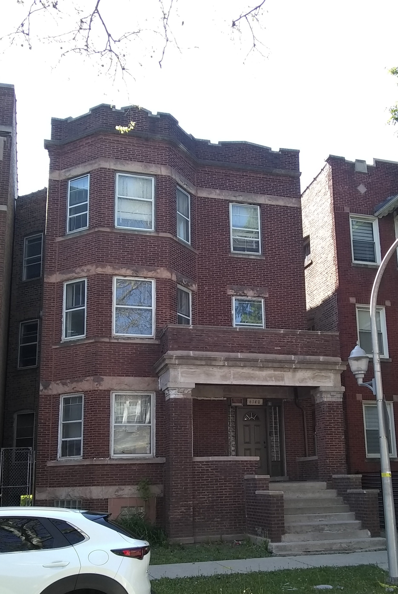

In 1937 Carl Hansberry bought a brick three-flat at 6140 South Rhodes, inside a covenant the university had helped defend. A mob gathered, and a chunk of concrete nearly struck his daughter Lorraine, age seven. Hansberry v. Lee reached the Supreme Court in 1940 and the family won. The covenant's backers had never gathered the signatures its own terms required. Shelley v. Kraemer ended court enforcement everywhere in 1948. Lorraine Hansberry put the mob outside the window into A Raisin in the Sun.

Banks would not follow the ruling, so speculators filled the gap. They bought cheap from fleeing white owners and resold to Black families on installment contracts at prices they set themselves. If a family missed one payment, the seller kept the house and every dollar paid. Buildings were cut into one-room kitchenettes, and the crowding that followed was blamed on the people paying the markup.
The university's answer to the changing neighborhood was land clearance. Its South East Chicago Commission, formed in 1952 under attorney Julian Levi, helped write an Illinois law that let planners condemn blocks that only might become blighted. Demolition began near 55th and Lake Park in 1955. On November 7, 1958, City Council approved the Hyde Park-Kenwood plan, the first large federally supported urban renewal program in the country. The plan gave moving help to displaced renters and nothing to displaced businesses. Most of the businesses never reopened.
UNIVERSITY ACTION
THE COURTS
history of American cities · rooted-forward.org